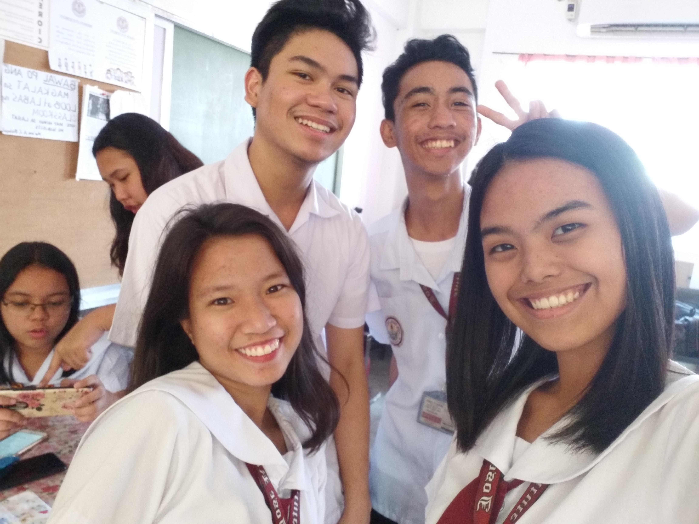
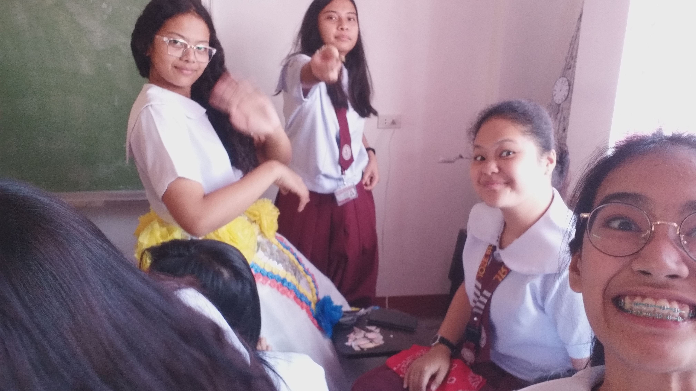

Concept art for Jon's top

The original sketch and concept for the dress

The redesign on the chalkboard for the dress.

Jersie being a mannequin

Reyn as a mannequin while others glue new flowers.

Jersie with a little peace sign as a mannequin

The peeps smiling with the future Mr. UN (and Mr. JRI!)

Attaching the straw decorations with the future Ms. UN!

Life at the "workshop"